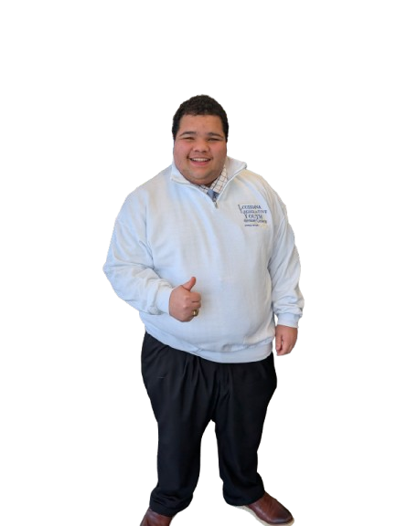

Brandon Rowton is running to bring transparency, accountability, and provide a real listening ear to Ward 9 residents.
.PNG)
Ward 9 deserves a school board member who listens — not just at election time, but every day.

I grew up in and around the same schools our students walk into every day. I've seen what happens when decisions are made without listening to the people in the classroom or at the kitchen table.
Ward 9 deserves a school board member who treats every policy and every budget line as if it affects a real family — because it does.
Grounded in public education and real-world experience in our community.
Committed to listening to all parties: parents, teachers, students, and staff.
Focused on a long-term plan and a sustainable outlook for our school system.
Six clear commitments to Ward 9 families, teachers, and students.
Reforming teacher and student guidelines with input from every party — not just central administration.
Families deserve to know where every dollar goes. Full visibility into how Ward 9's money is spent.
Reforming our school lunch program so every student feels comfortable and cared for.
A steady, transparent approach to leadership — starting day one.
A school board seat isn't a microphone — it's a responsibility. My approach is simple: listen first, ask direct questions, and keep Ward 9 at the center of every decision.
I'll seek input from Ward 9 families, teachers, and staff — not just the central office.
I'll push for clear explanations of how money moves and how it affects real classrooms.
Families shouldn't have to dig for basic information. I'll advocate for clearer updates and better outreach.
Learn more about the vision for Ward 9 — in person.
Details to be announced. Check back soon.
Details to be announced. Check back soon.
November 3rd - 7:00 AM until 8:00 PM
Endorsements will appear here as they are announced.
Coverage, op-eds, and official statements from the campaign.
Over the past couple of months, much work has been done behind the scenes by the Legislative Youth Advisory Council (LYAC) to ensure that we make the most of the upcoming legislative session in March. With the council's limited ability to propose meaningful legislation in the previous year's regular session, this year's council wishes to make the most of the opportunity that has been presented before us. We have made material strides in advancing our legislative ideas in-house. Just in the past month, at November's LYAC meeting, we formally gathered and chose our individual committee chair and vice-chairpersons. In that venture, I was selected as Co-Chair of LYAC's education committee. In recent years, that has been considered LYAC's most influential vessel. Due to the small size of the committee, however, it was decided the committee would consist of two Co-Chairs rather than a Chair and Vice-chair. For committee leadership, we are limited to participating in a singular committee, so my previous selection of both the Education Committee and Civic-Engagement Committee has been nullified. Within the coming months I hope to foster formidable ideas for legislation. I have narrowed down my proposal to one: A bill to require all public-school districts in the state of Louisiana (with few exceptions) to have a youth advisory council with a minimum of two individuals. I also hope to work individually with legislators to pass meaningful nicotine/tobacco legislation. But there are a limited number of legislative concepts I can create alone. I would appreciate hearing input from the local community to foster more community-oriented ideas. Such as ideas that would not only help Jena High School or LaSalle Parish schools but benefit the state of Louisiana universally. While I do represent LaSalle parish and the 5th Congressional district, the bills pushed by LYAC are meant to be beneficial and effective for all youth across our diverse communities here in Louisiana. In addition, the most important aspect of my aspiration for what LYAC could be, I have made it a mission to facilitate the creation of a new logo. The current logo, in my opinion, is outdated and doesn't adequately embody our state's modernization or branding/appeal. While we see time and time again agencies, companies, and other government entities in our state rebrand or craft a new logo, some stagger behind, and I think the same can be said with LYAC's logo. With that, I'd appreciate hearing from anyone who would be interested in designing/crafting the new logo. My goal is to have the logo crafted by someone outside of LYAC, so that the logo reflects what the viewer sees in the importance and impact of what we do.
My fellow residents of LaSalle Parish, it is with great satisfaction and deep appreciation that I announce my candidacy for the LaSalle Parish School Board to represent Ward 9. As a lifelong resident of this parish, I have spent the last several years working to advance our school district, both as a student at Jena High School and as a member of the Legislative Youth Advisory Council, alongside many other titles. I have worked alongside local and state leaders and seen firsthand what is working in our state schools and what is not. Ward 9 deserves a representative who understands that you have got to show up to make a difference. And that’s what it is all about: showing up to make a real and lasting impact that leads to positive change. As someone who has lived through the decisions made by our school board over the last decade, I can say honestly that my feedback isn’t all that positive. We can do better and we must. First, if elected, I will advocate for the state legislature to create a task force to study the effects of the four‑day school week. Right now, students, parents, teachers, and school board members across Louisiana are forming opinions or making decisions with incomplete, or in many cases, almost nonexistent data. We need a standardized, statewide data set so that every district can make informed, responsible decisions about instructional time, academic outcomes, and family impact. Second, I believe LaSalle Parish must take a serious look at how we use electronics in the classroom. Unlike the four‑day school week, the research on excessive classroom technology use is clear and consistent: overreliance on devices can negatively affect test performance and student learning. We need to ensure that technology is being used solely as an extra tool and that our classrooms remain focused on strong instruction, not screen time. Our parish is full of talented students, dedicated teachers, and families who care deeply about education. What we need now is leadership that listens, leadership that understands the student experience, and leadership that shows up. I am running because I believe Ward 9 deserves a school board member who will fight for accountability and common‑sense decision‑making. Together, we can move LaSalle Parish forward. The future isn’t coming: I’m running for it.
Journalists and reporters are welcome to reach out directly. Brandon is available for interviews, quotes, and on-the-record statements. Contact the campaign at blrowton@gmail.com or call (318) 316-5053.
Have a question, concern, or idea? Reach out directly.
This campaign is focused on Ward 9 of LaSalle Parish. Brandon wants to make sure his message reaches the families and community members he'd represent on the school board.
This question is intended to count the number of visits from Ward 9 residents.